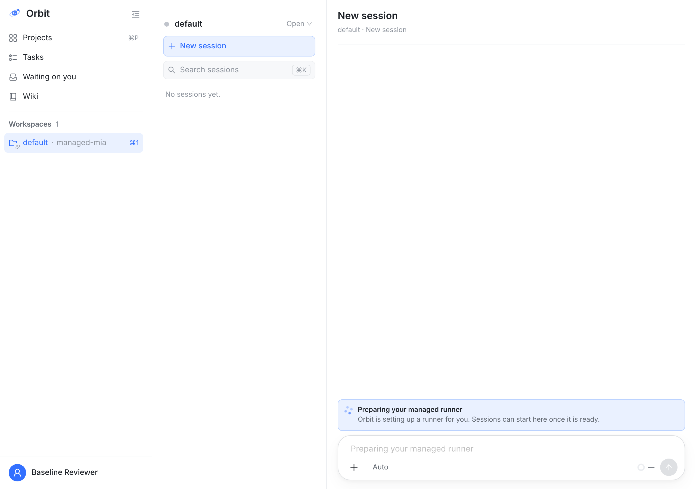
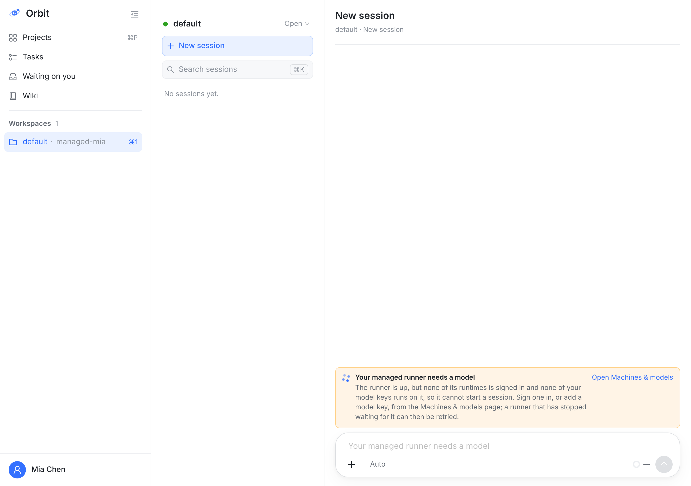
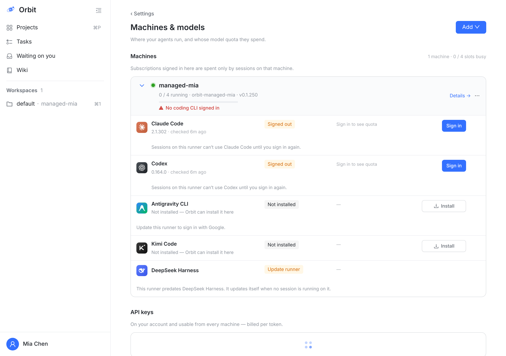
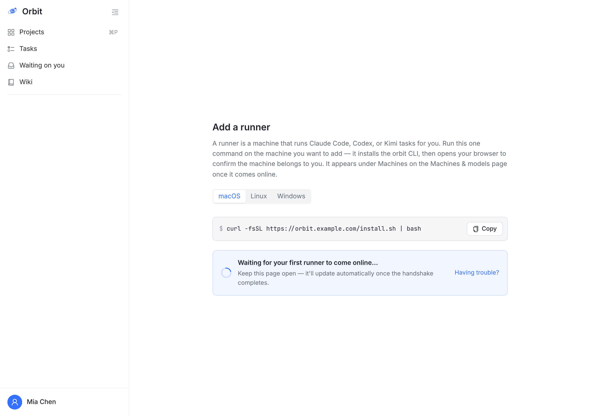
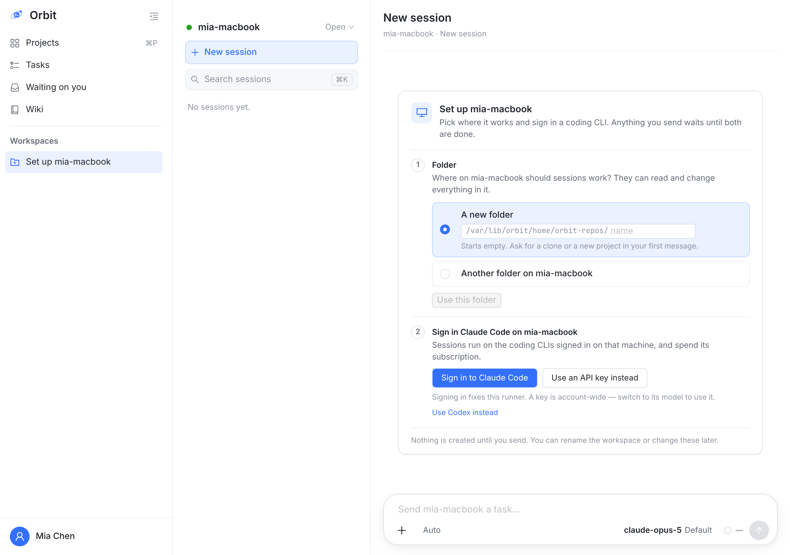
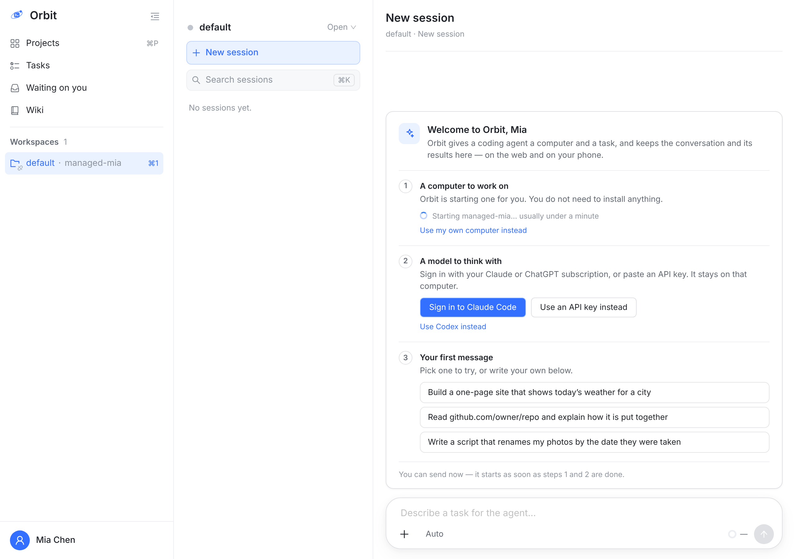
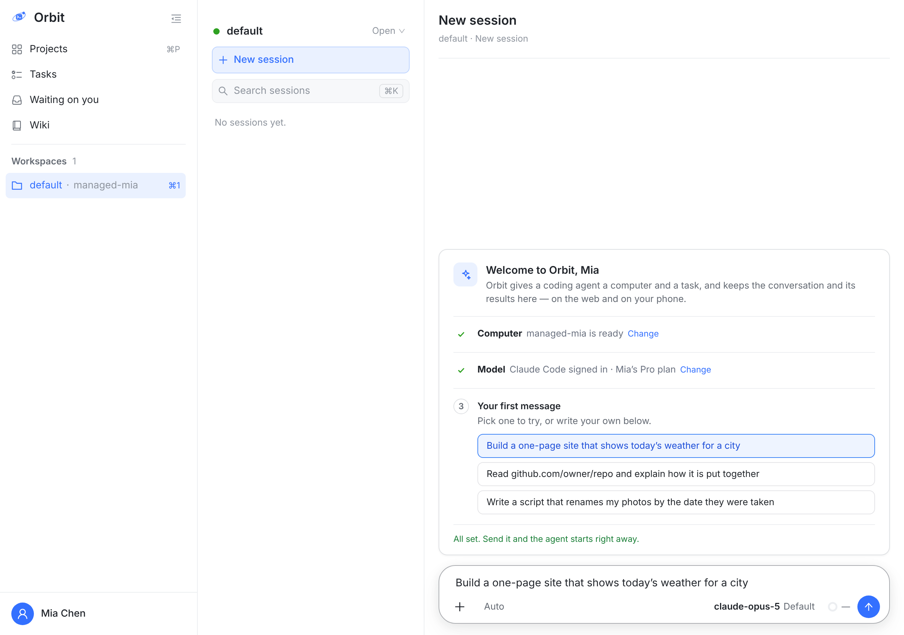
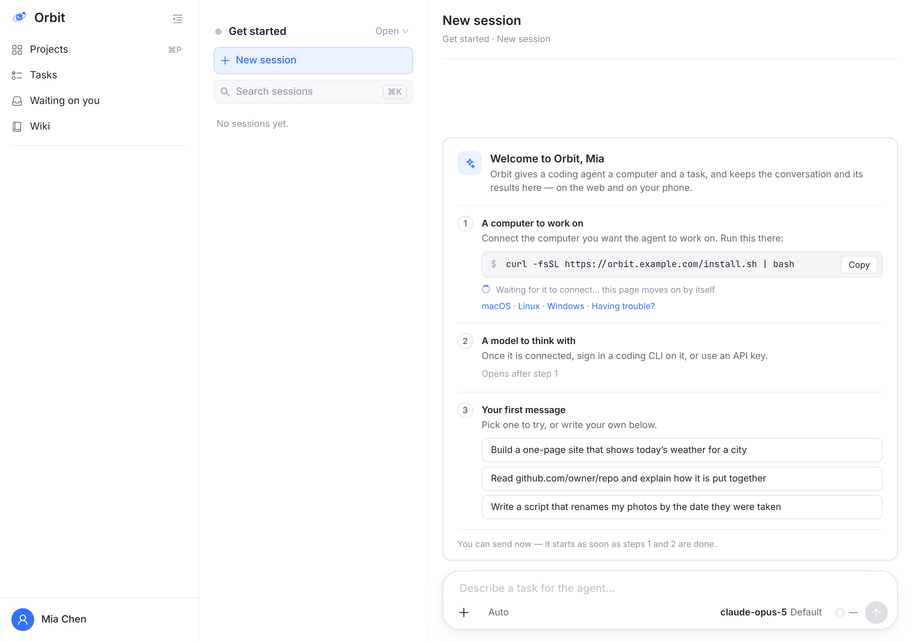

两条路取决于服务器有没有开托管 runner。示例账号 Mia：管理员刚建的号，第一次登录。





把 B2 的设置卡扩成“欢迎卡”，两条路都落在同一张卡上：① 电脑 ② 模型 ③ 第一条消息。不做弹窗、不做分页向导；卡下面的输入框一直能用，先发的消息等前两步做完自动开始（沿用 B2 已有的“消息先等着”）。外观全部复用已上线的 .msc / .rsi 组件，不新造样式。帧是真实页面 + DOM 注入。

1234
56rsi 登录组件，OAuth 粘码流程同 B2），或 API key，或换 Codex。不再跳到 Machines & models。不用等第 1 步：托管 runner 起来前也能先点，起来后自动接上。
78连上之后，今天 B2 的“文件夹”那一步照旧出现在第 1、2 步之间（自己的电脑要选在哪个文件夹工作；托管 runner 不需要，用它自带的 default）。
iPhone / Mac / Android：同一张卡的竖排版本，在 web 定稿后再出图。
| 问题 | 方案 A | 方案 B |
|---|---|---|
| 1. 引导的形式 | 新会话页里的一张卡（本板）。和 B2 一致，用户随时能直接打字，不打断。推荐 | 全屏分页向导（欢迎 → 选电脑 → 登录模型 → 写第一条），走完才进主界面。更“仪式感”，但多一套页面，卡住就进不去。 |
| 2. 开了托管 runner 时，要不要先问“用托管还是自己的电脑” | 默认托管，只给一个小链接切换。新人零安装就能跑起来。推荐 | 第 1 步做成二选一单选。更透明，但多一个决定，而且多数新人答不上来。 |
| 3. 第一条消息的示例 | 三个固定示例，写在客户端，英文，选了只填输入框。推荐 | 不给示例，只留输入框和一句提示。更干净，但空白输入框正是新人最难的一步。 |
| 4. Projects / Tasks / Wiki 要不要一并介绍 | 不介绍。先让第一个会话跑起来；这些概念等用户自己点进去时再在各自的空状态里讲。推荐 | 第一个会话结束后弹 3 张卡片的功能导览。 |
GET /managed-runner）、runner 在线与引擎 auth、账号的 API key。没有新接口。| 阶段 | 内容 | 大小 |
|---|---|---|
| P0 web | 新 WelcomeCard：由 MachineSetupCard 扩出（加“电脑”步、示例步、折叠完成行）；DefaultLanding 的无 runner 分支不再跳 /runners/register，而是落到这张卡；托管 runner 的 notice 在卡出现时不再单独显示。 | 仅 web，约 1 个任务，无服务端改动 |
| P1 iOS / macOS | 同一张卡的 SwiftUI 版本（现在原生端新账号只看到 “on the web”）。 | 1 个任务 |
| P1 Android | 同上，Compose 版本，跟 iOS 对齐。 | 1 个任务 |